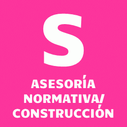

|
Servicio XS Te traduzco la normativa que debes cumplir se acuerdo al Plan Regulador de tu comuna. Ayuda a no tener problemas para una futura regularización. |
|  |
Servicio S Aparte de la asesoría en la normativa, reviso tus ideas y te aconsejo para que optimices en espacios y materiales. |

|
Servicio M Te asesoro durante el proceso de la construcción. Puede ser para supervisar toda la obra, o solo para resolver dudas puntuales. Puede ser online mediante fotos o presencial. |